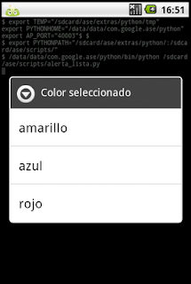
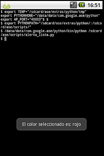

Widgets en Android con python. Parte 7 (selección simple)
Posted on lun 19 julio 2010 in Tutorial Python en Android • 1 min read
En este artículo explicaré el uso del widget de selección simple.
La idea es tener una tupla con varios colores, se abre un widget con esos colores y se selecciona uno, luego aparecerá un mensaje con el color seleccionado.
A continuación se muestra el código en python de la aplicación:
#Importar módulo android y time.
import android,time
#Se instancia el objeto Android
droid = android.Android()
#Se crea el titulo del mensaje de alerta y se crea el widget.
titulo = 'Color seleccionado'
droid.dialogCreateAlert(titulo)
#Se crea la tupla con la lista de colores.
colores = ('amarillo', 'azul', 'rojo')
#Se agrega la tupla al widget de selección simple.
droid.dialogSetItems(colores)
#Se muestra el widget.
droid.dialogShow()
#Se captura el resultado de seleccionar un color
respuesta = droid.dialogGetResponse().result
#El resultado se guarda en un diccionario y se muestra en un mensaje.
droid.makeToast('El color seleccionado es: %s' %colores[respuesta['item']])
La siguiente figura muestra el widget de la lista de colores.

Luego de darle clip a un color se muestra un mensaje con el color selecionado como lo muestra la siguiente figura.

Para finalizar se muestra la figura del código QR del programa.
===
¡Haz tu donativo! Si te gustó el artículo puedes realizar un donativo con Bitcoin (BTC) usando la billetera digital de tu preferencia a la siguiente dirección: 17MtNybhdkA9GV3UNS6BTwPcuhjXoPrSzV
O Escaneando el código QR desde billetera: